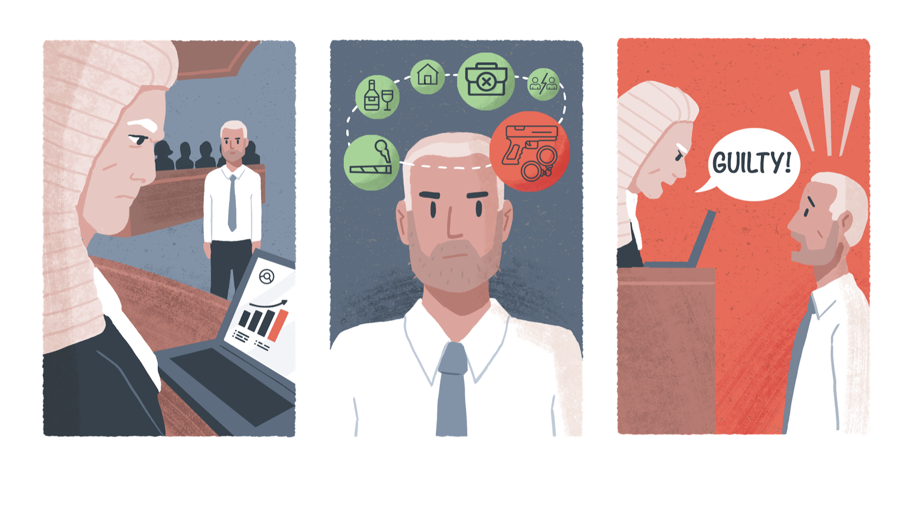

Introduction to the principle of fairness¶
In this section, we will explore the complicated landscape of AI fairness definition as a preliminary step towards understanding the ways in which existing biases manifest in the design, development, and deployment of AI systems. Understanding how concepts of fairness are used in the field of AI ethics and governance is a crucial prerequisite to understanding where and how unfair biases arise across AI project lifecycles, because relevant notions of fairness operate both as ethical and legal criteria based upon which biases can be identified across the AI project workflow and as normative yardsticks against which they can be measured and then appropriately mitigated.
When thinking about AI fairness, it is important to keep in mind that these technologies, no matter how neutral they may seem, are designed and produced by human beings, who are bound by the limitations of their own given contexts and by biases that can arise both in their cognitive processes and in the social environments that influence their actions and interactions. Pre-existing or historical configurations of discrimination and social injustice—as well as the prejudices and biased attitudes that are shaped by such configurations—can be drawn into the AI innovation lifecycle and create unfair biases at any point in the project workflow. This is the case from the earliest stages of agenda setting, problem selection, project planning, problem formulation, and data extraction to later phases of model development and system deployment. Additionally, the datasets used to train, test, and validate AI/ML models can encode socially and historically crystallised forms of inequity and discrimination, thereby embedding biases in an algorithmic model’s variables, inferences, and architecture.
This wide range of entry points for bias and discrimination across the AI/ML innovation lifecycle has complicated the notion of fairness, since the inception of fairness-centred approaches like ‘discrimination-aware data mining’ and ‘fair machine learning’ more than a decade ago.[@barocas2016a]-[@binns2017]-[@friedman1996]-[@hajian2013].
To be sure, possibilities for reaching consensus on a commonly accepted definition for AI/ML fairness and on how to put such a definition into practice have been hampered by the myriad technical and sociotechnical contexts in which fairness issues arise. Such prospects for consensus have also been challenged by the broad spectrum of views in society on what the concept of fairness means and how it should best be operationalised. For this reason, in this practical guidance, we take a context-based and society-centred approach to understanding AI/ML fairness that is anchored in two pillars.
First, to understand how concepts of fairness are defined and applied in AI innovation contexts, we must begin by acknowledging that there is a plurality of views in the social world on the meaning of fairness—myriad interpretations of its sense and significance within and across cultures, societies, and legal systems. For instance, the meaning of the term ‘fairness’, in its contemporary English language usage, has dozens of interpretations which include a range of related but distinctive ideas such as equity, consistency, non-discrimination, impartiality, justice, equality, honesty, and reasonableness.[@audard2014]-[@carr2017]
Likewise, the translation of the word ‘fairness’ into other languages has proven to be notoriously difficult, with some researchers claiming that it cannot be consistently understood across different linguistic groups.[@audard2014]-[@vandenberghe2022] It is clear, from this vantage point, that fairness (and adjacent notions like equity, impartiality, justice, equality, and non-discrimination) must be approached with an appropriately nuanced responsiveness both to the many ways in which these concepts can be interpreted and to the many contexts in which they can be applied.
Second, despite this pluralism in the understanding and application of the concept of fairness, there has been a considerable convergence around how the interrelated priorities of non-discrimination and equality constitute the justificatory nucleus of fairness concerns. Though some claim that fairness is ultimately a subjective value that varies according to individual preferences and cultural outlooks, general ethical and legal concepts of fairness are predicated on core beliefs in the equal moral status of all human beings and in the corollary right of all human beings to equal respect, concern, protection, and regard before the law.
On this view, it is because each person possesses an intrinsic and equal moral worth that everyone deserves equal respect and concern—respect and concern that is grounded in the common dignity and humanity of every person.[@dworkin2000]-[@carr2000]-[@giovanola2022]
The normative core of fairness, in this respect, has to do with the moral duty to treat others as moral equals and to secure the membership of all in a ‘moral community’ where every person can regard themself as having equal value.[@vlastos1984] Wrongful discrimination, along these lines, occurs when decisions, actions, institutional dynamics, or social structures do not respect the equal moral standing of individual persons.[@eidelson2015]-[@giovanola2022]-[@sangiovanni2017]
Convergence around this centrality of equality and non-discrimination as an indispensable cornerstone of fairness concerns has also led to their widespread acceptance as normative anchors of both international human rights law and anti-discrimination and equality statutes. In human rights law, interlocking principles of equality and non-discrimination are taken to be essential preconditions for the realisation of all human rights insofar as equality and non-discrimination are implied in the guarantee of the equal enjoyment and protection of fundamental rights and freedoms to all human beings per se.[@clifford2013] For this reason, principles of equality and non-discrimination are treated as jus cogens in human rights law—i.e., they are treated as peremptory or foundational norms that permeate all human rights provisions and from which no derogation is permitted in any case.[@carozza2013]-[@clifford2013]
In anti-discrimination and equality statutes in the UK and beyond, dovetailing priorities of equality and non-discrimination likewise form principal aims and essential underpinnings of fairness concerns. In this case, equality before the law manifests as equal protection from discriminatory harassment and from both direct and indirect kinds of discrimination (UK Equality Act, 2010). In discriminatory harassment, unwanted or abusive behaviour linked to a protected characteristic violates someone’s dignity, degrades their identity, or creates an offensive environment for them. For example, an employer who makes a racist remark about a protected group in the presence of an employee from that racial background would be considered to have harassed that employee based on the protected characteristic of race.
What are protected characteristics?
In the 2010 UK Equality Act, protected classes include age, gender reassignment, being married or in a civil partnership, being pregnant or on maternity leave, disability, race including colour, nationality, ethnic or national origin, religion or belief, sex, and sexual orientation. The European Convention on Human Rights, which forms the basis of the UK’s 1998 Human Rights Act, includes as protected characteristics ‘sex, race, colour, language, religion, political or other opinion, national or social origin, association with a national minority, property, birth or other status'.
Direct discrimination occurs when individuals are treated adversely based on their membership in some protected class. This type of discrimination is also known as ‘disparate treatment’ because it involves instances where otherwise similarly positioned individuals receive different and more-or-less favourable treatment on the basis of differences between their respective protected characteristics. For instance, direct discrimination would occur if an otherwise well-qualified job applicant were intentionally denied an opportunity for employment because of their age, disability, or sexual orientation.
By contrast, indirect discrimination occurs when existing provisions, criteria, policies, arrangements, or practices—which could appear on their face to be neutral—disparately harm or unfairly disadvantage members of some protected class in comparison with others who are not members of that group. This type of discrimination is also known as ‘disparate impact’ because what matters here is not directly unfavourable treatment in individual cases but rather the broader disproportionate adverse effects of provisions, criteria, policies, arrangements, or practices that may subtly or implicitly disfavour members of some protected group while appearing to treat everyone equally. Indirect discrimination can therefore involve the impacts of tacitly unjust or unfair social structures, underlying inequalities, or systemic patterns of implicit historical bias that manifest unintentionally through prevailing norms, rules, policies, and behaviours. For instance, indirect discrimination would occur if a job advertisement specified that applicants needed to be native English speakers, for this would automatically disadvantage candidates of different nationalities regardless of their levels of fluency or language training.
These three facets of anti-discrimination and equality law (harassment, direct discrimination, and indirect discrimination) have significantly shaped contemporary approaches to AI fairness.[@adams-prassl2022]-[@liu2018]-[@ntoutsi2019]-[@pessach2020]-[@watcher2021]
Indeed, attempts to put the principle of AI fairness into practice have largely converged around the priority to do no discriminatory harm to affected people along each of these three vectors of potential injury. It is thus helpful to think about basic AI fairness considerations as tracking three corresponding questions (An example of an associated discriminatory harm is provided alongside each.):
-
How could the use of the AI system we are planning to build or acquire—or the policies, decisions, and processes behind its design, development, and deployment—lead to the discriminatory harassment of impacted individuals (i.e., unwanted or abusive treatment of them which is linked to a protected characteristic and which violates their dignity, degrades their identity, or creates a humiliating or offensive environment for them)?
??? example "Example"
An AI-enabled customer support chat bot is built from a large language model that has been pretrained on billions of data points scraped from the internet and then customised to provide tailored responses to customer questions about the provision of a public service. After the system goes live, it is soon discovered that, when certain customer names (which are indicative of protected classes) are entered, the chatbot generates racist and sexist text responses to customer inquiries. -
How could the use of the AI system we are planning to build or acquire—or the policies, decisions, and processes behind its design, development, and deployment—lead to the disproportionate adverse treatment of impacted individuals from protected groups on the basis of their protected characteristics?
??? example "Example"
An AI system used to filter job applications in a recruitment process is trained on historic data that contains details about the characteristics of successful candidates over the past several years. Because white male applicants were predominantly hired over this time, the system learns to infer the likelihood of success based on proxy features connected to the protected characteristics of race and sex. It consequently filters out non-white and non-male job candidates from the applicant pool. -
How could the use of the AI system we are planning to build or acquire—or the policies, choices, and processes behind its design, development, and deployment—lead to indirect discrimination against impacted individuals from protected groups?
??? example "Example"
An AI-enabled medical diagnosis tool is built as a smartphone application and made available to all participants in a national health system without sufficient considerations of the barriers to access faced by some citizens. It becomes clear after the app is launched that the device disproportionately favours younger, more digitally literate, and more affluent community members, while disadvantaging both the elderly, less digitally literate population and digitally deprived people who do not have access to smartphone technologies and internet connections.
It is important to note, regarding this final question on indirect discrimination, that the Public Sector Equality Duty mandates considerations both of how to ‘reduce the inequalities of outcome which result from socio-economic disadvantage’ and of how to advance equality of opportunity and other substantive forms of equality. This means that our approach to putting the principle of AI fairness into practice must include social justice considerations that concentrate on how the production and use of AI technologies can address and rectify structural inequalities and institutionalised patterns of inequity and discrimination rather than reinforce or exacerbate them. We must consequently take a multi-pronged approach to AI fairness that integrates formal approaches to non-discrimination and equality (which focus primarily on consistent and impartial application of rules and equal treatment before the law) with more demanding substantive and transformative approaches(which focus on equalizing the distribution of opportunities and outcomes and on the fundamental importance of addressing the material pre-conditions and structural changes needed for the universal realisation of equitable social arrangements).
What is social justice?
Social justice is a commitment to the achievement of a society that is equitable, fair, and capable of confronting the root causes of injustice. In an equitable and fair society, all individuals are recognised as worthy of equal moral standing and are able to realise the full assemblage of fundamental rights, opportunities, and positions.
In a socially just world, every person has access to the material means needed to participate fully in work life, social life, and creative life through the provision of proper education, adequate living and working conditions, general safety, social security, and other means of realising maximal health and well-being.
Social justice also entails the advancement of diversity and participatory parity and a pluralistically informed recognition of identity and cultural difference. Struggles for social justice typically include accounting for historical and structural injustice coupled to demands for reparations and other means of restoring rights, opportunities, and resources to those who have been denied them or otherwise harmed.]
Discriminatory non-harm¶

While there are different ways to characterise or define fairness in the design and use of AI systems, you should consider the principle of discriminatory non-harm as a minimum required threshold of fairness. This principle directs us to do no harm to others through direct or indirect discrimination or through discriminatory harassment linked to a protected characteristic that violates the dignity of impacted individuals, degrades their identity, or creates a humiliating or offensive environment for them:
Key Concept: Principle of Discriminatory Non-Harm (Do No Discriminatory Harm)
The producers and users of AI systems should prioritise the identification and mitigation of biases and discriminatory influences, which could lead to direct or indirect discrimination or discriminatory harassment. This entails an end-to-end focus on how unfair biases and discriminatory influences could arise (1) in the processes behind the design, development, and deployment of these systems, (2) in the outcomes produced by their implementation, and (3) in the wider economic, legal, cultural, and political structures or institutions in which the AI project lifecycle is embedded—and in the policies, norms, and procedures through which these structures and institution influence actions and decisions throughout the broader AI innovation ecosystem. Developers and users of AI systems should, in this respect, acknowledge and address discriminatory patterns that may originate in the data used to train, test, and validate the system and in the model architectures (i.e., the variables, parameters, inferences, etc.) that generate system outputs.
Beyond this, the principle of discriminatory non-harm implies that producers and users of AI systems should ensure that their research, innovation, and implementation practices are undertaken in an optimally responsible and ethical manner, more broadly, in keeping with the historical tendency that deficiencies in the deployment and operation of faulty systems often disparately impact protected, underrepresented, or disadvantaged groups.
The principle of discriminatory non-harm applies to any AI system that processes social or demographic data (i.e., data pertaining to features of human subjects, population- and group-level traits and characteristics, or patterns of human activity and behaviour). However, the principle applies equally to AI systems that process bio-physical or biomedical data. In this case, imbalanced datasets, selection biases, or measurement errors could have discriminatory effects on impacted individuals and communities—for instance, where a demographic group’s lack of representation in a biomedical dataset (e.g., one used to train a diagnostic prediction model) means that the trained system performs poorly for that group relative to others that are better represented in the data.
Prioritising discriminatory non-harm implies that the producers and users of AI systems ensure that the decisions and behaviours of their models neither treat impacted individuals adversely based on their membership in some protected class or socioeconomic group nor, intentionally or unintentionally, generate discriminatory or inequitable impacts on affected individuals and communities that unfairly disadvantage members of some protected class or socioeconomic group in comparison with others who are not members of that class or group. It can also be seen as a proportional approach to bias mitigation because it sets a baseline for fair AI systems, while, nevertheless, creating conditions for developers and users to strive towards an ideal for fair and equitable outcomes for all people as moral equals and as members of a just community where every person can regard themself as having intrinsic dignity and equal moral standing.
Finally, the scope of the principle means that, beyond designers and users, any individuals, organisations, or departments who are procuring AI systems must ensure that the vendors of such systems can demonstrate the mitigation of potential biases and discriminatory influences in the processes behind their production and in their outputs.